03/07/2018 — Hãy xem điều gì xảy ra khi “viêm màng ngoài tim” và morphin che mờ phán đoán của bạn
Bản dịch tiếng Việt của bài "Watch what happens when “pericarditis” and morphine cloud your judgment" – Dr. Smith’s ECG Blog. Giữ nguyên toàn bộ 16 hình ảnh của bản gốc.
Do Alex Bracey gửi và viết, Pendell Meyers và Steve Smith biên tập
Ca bệnh
Một người đàn ông khoảng 50 tuổi, có tiền sử bệnh động mạch vành (CAD) với nhồi máu cơ tim vùng LAD trước đây, đã đặt stent LAD, đến khoa cấp cứu (ED) vì đau ngực “giống cơn nhồi máu cơ tim trước đây, nhưng nặng hơn”. Cơn đau khởi phát lần đầu vào hôm trước ngày đến viện. Cơn đau làm ông thức giấc nhưng tự hết mà không cần can thiệp gì. Khoảng 19 giờ sau, ông lại bị đúng cơn đau ấy, và điều đó khiến ông đến khoa cấp cứu. Đến lúc này, đã ba giờ trôi qua kể từ khi khởi phát cơn đau nhưng cơn đau không còn nữa. Đây là điện tâm đồ ban đầu của ông:
Lúc 00:04

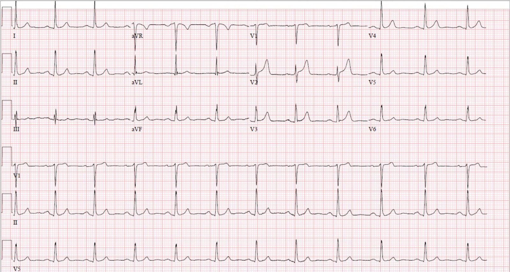
Bạn nghĩ gì?
– Nhịp xoang tần số ~70 lần/phút; ST chênh lên (STE) ở chuyển đạo V2 với diện tích dưới đoạn ST và sóng T lớn một cách đáng ngờ so với phức bộ QRS
– Biến dạng phần cuối QRS (terminal QRS distortion) ở mức giới hạn tại V3. Có lẽ có một sóng J rất nhỏ ở một vài phức bộ QRS tại V3, nhưng chưa đủ để khẳng định chắc chắn là có sóng J. Ví dụ, chuyển đạo aVL thì có sóng J rõ ràng.
Không có thông tin gì khác ngoài điện tâm đồ đầu tiên ở trên, tôi nhắn tin cho Dr. Smith và ông trả lời: “ST chênh lên ở chuyển đạo V2 và biến dạng phần cuối QRS ở V3. Tắc LAD. Ca hay. Chỉ xem trên điện thoại.”
Để luyện tập, hãy tính phương trình phân biệt ST chênh lên giữa tái cực sớm lành tính và tắc LAD. Xin nhắc lại rằng biến dạng phần cuối QRS là một tiêu chuẩn loại trừ của công cụ tính này (bản thân nó đã gợi ý độc lập tắc LAD), vì vậy thực ra không thể áp dụng công cụ này cho ca này.

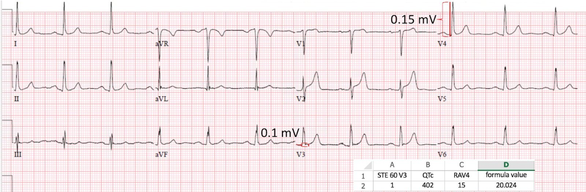
Điện tâm đồ ban đầu kèm các số đo và phép tính

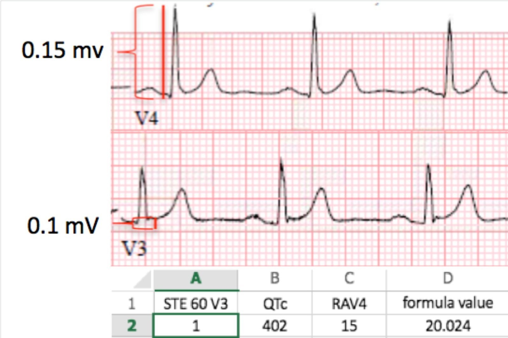
Ảnh phóng to các số đo và phép tính
Một “giá trị công thức” lớn hơn 23.4 vừa nhạy vừa đặc hiệu cho tắc LAD cấp. Do đó, theo công thức này, điện tâm đồ này sẽ không đạt tiêu chuẩn của tắc mạch vành cấp (ACO).
Điểm theo công thức 4 biến (dùng biên độ QRS ở V2 = 9mm) là 16.59, thấp hơn điểm cắt 18.2 của công thức (cũng nghiêng về biến thể lành tính hơn là OMI).
Tuy nhiên, ngay cả khi điện tâm đồ này không có tiêu chuẩn loại trừ (biến dạng QRS), các công thức này cũng không nhạy hay đặc hiệu hoàn hảo, kể cả trong các nghiên cứu phát triển công thức (derivation) (khoảng 90%). Quan trọng hơn, bệnh nhân này hoặc không còn đau ngực vào thời điểm ghi điện tâm đồ này, hoặc đau ngực đã giảm rất nhiều. Khi động mạch tái tưới máu, đau ngực giảm đi và điện tâm đồ bắt đầu hồi phục. Vì vậy, có thể đây là một điện tâm đồ đang tương đối “trên đà đi xuống” từ các dấu hiệu OMI rõ ràng. Những ca như vậy thực ra có thể chính là lý do khiến các công thức không chính xác hơn nữa, vì gần như không thể xác định hồi cứu điện tâm đồ nào được ghi vào lúc đau ngực đang nặng lên/đang đỡ/đã hết. Khi bệnh nhân đến viện mà cơn đau đã đỡ, điều hợp lý là điện tâm đồ có thể không còn cho thấy các dấu hiệu chẩn đoán.
Hãy so sánh với một điện tâm đồ cũ:

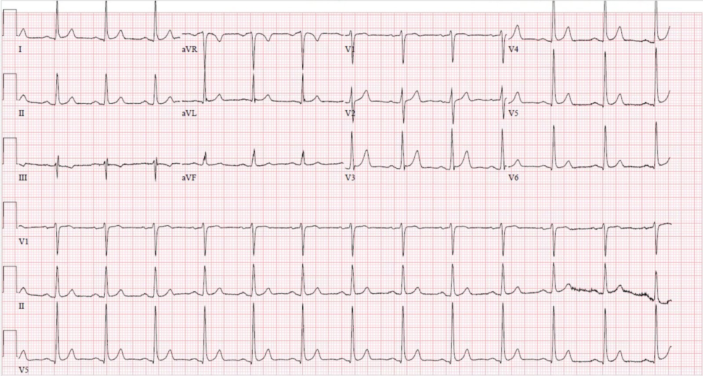
Điện tâm đồ cũ ghi 3 năm trước lần đến viện hôm nay
Phần lớn mọi người sẽ thấy điện tâm đồ này giống điện tâm đồ ban đầu, tuy nhiên V2 gần như không có ST chênh lên trên điện tâm đồ nền và sóng T nhỏ hơn. Cũng lưu ý sự biến mất rất tinh tế nhưng có thật của sóng S vốn có trước đây ở V3, chính là điều định nghĩa biến dạng phần cuối QRS.
Ngay cả khi tất cả các dấu hiệu này còn đáng bàn cãi, bệnh nhân có bệnh sử lâm sàng cực kỳ đáng lo ngại, với một stent có sẵn đúng ở vị trí phù hợp với các dấu hiệu trên điện tâm đồ. Trong tình huống này, phải mặc định rằng biến dạng phần cuối QRS và sóng T tối cấp thật sự hiện diện cho đến khi chứng minh được điều ngược lại, và phải theo dõi sát các điện tâm đồ liên tiếp để tìm các dấu hiệu này nếu quyết định đưa bệnh nhân vào phòng thông tim cấp cứu chưa được đưa ra dứt khoát. Siêu âm tim khẩn (Stat Echo) cũng sẽ hữu ích.

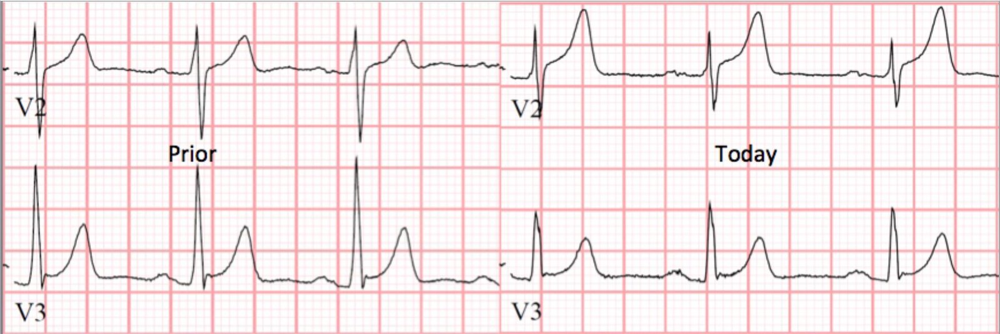
So sánh cận cảnh các chuyển đạo V2-V3
– Sóng T ở V2 hôm nay lớn hơn nhiều so với trước đây, và QRS thì tương đối nhỏ hơn
– V3 trên điện tâm đồ cũ có sóng S; V3 trên điện tâm đồ lúc đến viện không có thành phần nào của phức bộ QRS đi xuống dưới đường nền, và cũng không có sóng lệch dương đủ lớn để có thể gọi một cách tin cậy là sóng J. Do đó có biến dạng phần cuối QRS.
– ST chênh lên hôm nay khoảng ~0.2 mV so với 0.05-0.1 mV trước đây
Ca bệnh tiếp diễn:
Ông tiếp tục than khó chịu ở ngực từng lúc, giống cơn đau đã khiến ông đến viện. Troponin T ban đầu, đo 1 giờ sau khi bắt đầu đợt đau ngực này, thấp hơn 0.01 ng/mL (không phát hiện được).
Trong lúc ở khoa cấp cứu, ông được ghi thêm một điện tâm đồ:
Lúc 00:49

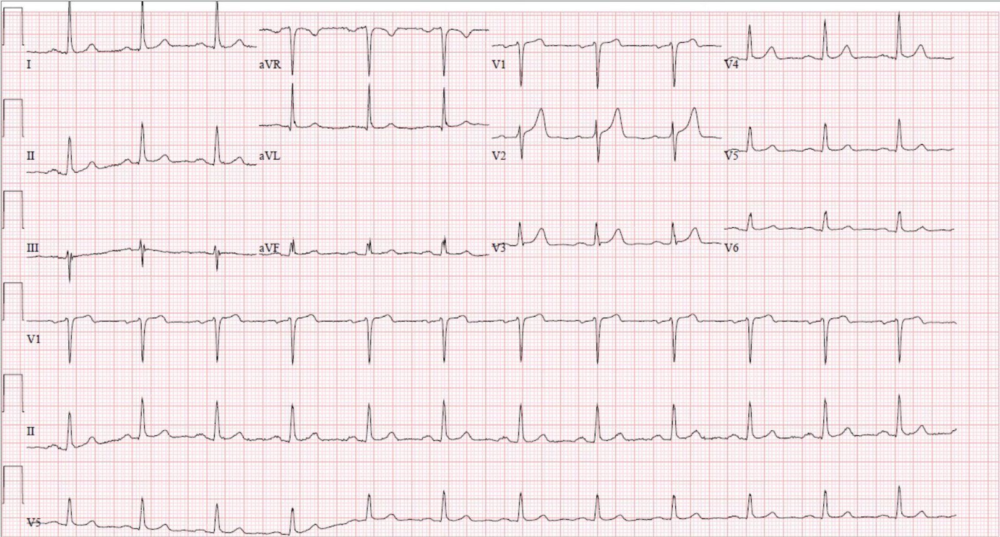
– Không thay đổi nhiều

Điện tâm đồ thứ hai kèm các số đo và phép tính

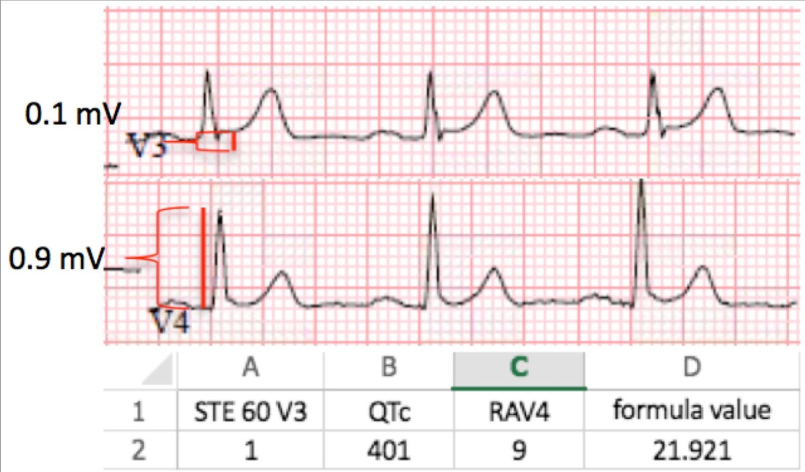
Ảnh phóng to các số đo và phép tính của điện tâm đồ thứ hai
Vào thời điểm này nó vẫn “âm tính” với tắc LAD (thấp hơn 23.4); tuy nhiên, cần nhớ rằng có những thay đổi động trên điện tâm đồ, dù chúng tinh tế. Các điện tâm đồ liên tiếp rất hữu ích trong những trường hợp này, và nên được ghi thường xuyên và/hoặc mỗi khi có bất kỳ thay đổi lâm sàng nào.
Lúc 0244 ông được dùng morphin nhưng đau ngực không hết hoàn toàn, và sau đó được bắt đầu truyền nitroglycerin liên tục với liều 10 mcg/phút vì đau ngực kháng trị.
Trước khi đi tiếp, cần chỉ ra rằng việc dùng opioid cho đau ngực chưa phân định phải hết sức thận trọng. Hướng dẫn của AHA/ACC khuyến cáo thông tim cấp cứu cho bệnh nhân nghi hội chứng vành cấp (ACS) và đau ngực kháng trị dù đã điều trị nội khoa tối đa, được định nghĩa là aspirin + clopidogrel/ticagrelor + heparin/enoxaparin. Các liệu pháp này có thể gây tái tưới máu bằng thuốc đối với ACO, trong khi opioid có thể chỉ che lấp triệu chứng mà chẳng làm gì cho vấn đề nền. Không có dữ liệu nào gợi ý hoặc bác bỏ rằng dùng opioid dẫn tới kéo dài thời gian đến khi thông tim ở bệnh nhân ACS đang tiếp diễn; tuy nhiên, về mặt logic thì điều đó là hợp lý, vì một trong những yếu tố đủ điều kiện để thông tim cấp cứu là đau ngực đang tiếp diễn. Một khi bệnh nhân đã được xếp lịch thông tim cấp cứu, thì có thể cho thuốc opioid mà không sợ che lấp triệu chứng của ACO đang tiếp diễn, vì bệnh nhân đang trên đường đến chẩn đoán xác định và can thiệp.
Xem nghiên cứu này cho thấy mối liên quan giữa morphin và tử vong trong ACS:
Việc dùng morphin trong ACS liên quan độc lập với tử vong, với tỷ số chênh (odds ratio) là 1.4
http://prdupl02.ynet.co.il/ForumFiles_2/14835373.pdf (bài báo toàn văn dạng PDF về việc dùng morphin trong hội chứng vành cấp)
Ông được nhập vào đơn vị tim mạch để đo troponin liên tiếp vì lo ngại có thể là ACS. Troponin T lấy lại 4 giờ sau khởi phát đau ngực cho kết quả dương tính 0.02 ng/mL. Sau kết quả này, ông được dùng enoxaparin liều điều trị.
Sau khi nhập viện, ông được ghi thêm một điện tâm đồ nữa, dù từ hồ sơ không rõ khi đó đau ngực của ông có thay đổi hay không.
Lúc 06:44

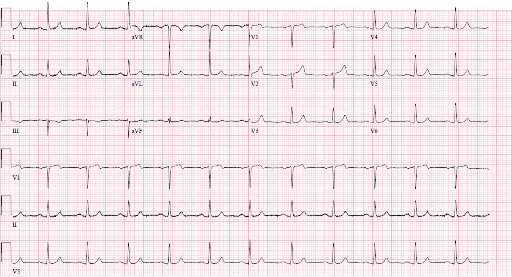
Ghi chép ban đầu của bác sĩ tim mạch nêu rằng biểu hiện bệnh “phù hợp hơn với viêm màng ngoài tim”.
Hãy nhớ, viêm màng ngoài tim là thứ bạn nói ra và ghi vào hồ sơ khi bạn đang tích cực cố bỏ sót một OMI. Viêm màng ngoài tim thật ra chỉ có ích cho mỗi việc đó.
Troponin T lấy lại 8 giờ sau khởi phát đau là 0.07 ng/mL (tăng nhẹ).
Lúc 0800, bác sĩ nội trú chuyên khoa tim mạch (fellow) được điều dưỡng gọi đến giường bệnh vì bệnh nhân lại than đau ngực mức 4/10. Ông kể rằng ông “lo lắng vì cơn đau ngực không chịu hết” và cơn đau đã liên tục trong 2 giờ trước đó. Ông cũng buồn nôn. Lúc này không ghi lại điện tâm đồ nào (sai lầm rất lớn). Tốc độ truyền nitroglycerin được tăng lên 15 mcg/phút và bệnh nhân cho biết cơn đau đỡ xuống còn 3/10.
Sau đó, bác sĩ nội trú tim mạch lại được điều dưỡng gọi đến giường bệnh vì bệnh nhân cho biết cơn đau nặng lên, và lúc đó điện tâm đồ này được ghi:
Lúc 10:33

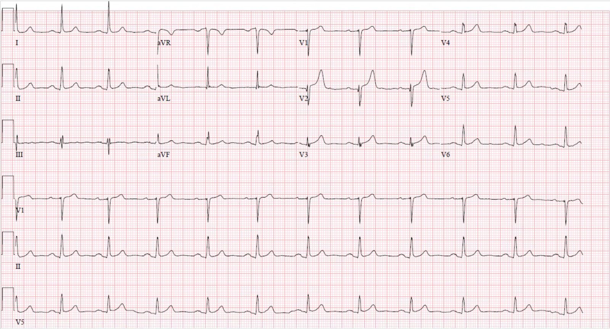
Dù hiện tại không còn là biến dạng phần cuối QRS, điều đó không quan trọng vì đến lúc này đây đã là một OMI thành trước rõ ràng.
Bác sĩ nội trú tim mạch và bác sĩ điều trị chính xem điện tâm đồ này và một lần nữa kết luận đây là viêm màng ngoài tim, rồi bắt đầu dùng colchicine và ibuprofen. Họ cũng ngừng truyền nitroglycerin vào lúc này. Thật là điên rồ.
Troponin T lấy lại 20 giờ sau khởi phát đau là 0.58 ng/mL.
Đến đây hãy cùng xem tất cả các chuyển đạo V2-V3 mà chúng ta đã thu được:

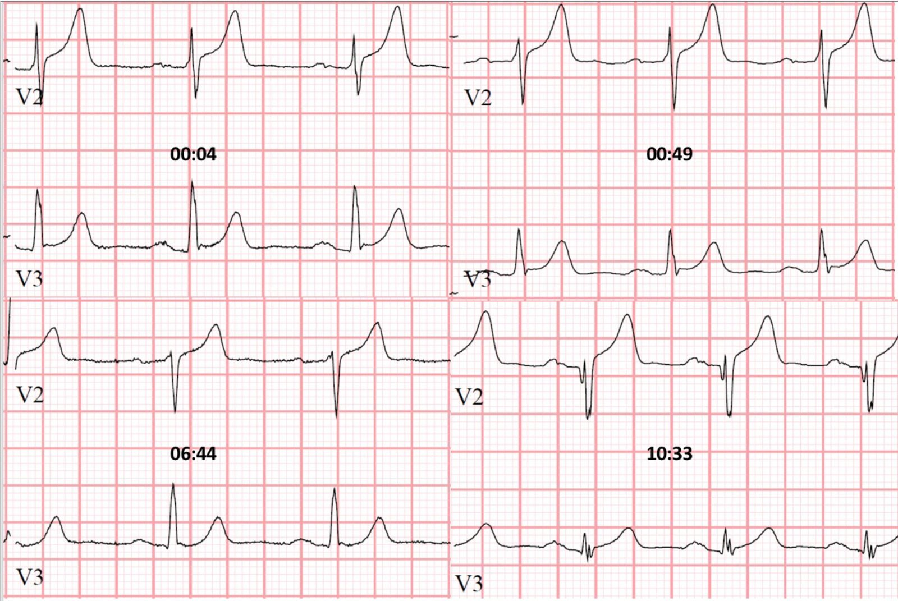
So sánh song song tất cả các chuyển đạo V2-V3. Sự thay đổi của phức bộ QRS ở V2 và V3 kể câu chuyện rõ nhất, cho thấy biến dạng QRS và biên độ QRS giảm dần, phân mảnh, cuối cùng là sóng Q rõ rệt.
Dù vẫn còn khó chịu ở ngực và troponin đang tăng dần, ông chưa bao giờ đạt tiêu chuẩn STEMI.
Troponin T lấy lại ~31 giờ sau cơn đau ngực ban đầu cho kết quả 0.74 ng/mL. Siêu âm tim làm sáng hôm đó cho thấy vách trước và chóp mỏm (apical cap) giảm động nặng, và chóp vách vô động. Phân suất tống máu lúc đó là 54%.
Các rối loạn vận động thành khu trú này không có trên siêu âm tim 4 năm trước. Hồ sơ gợi ý mạnh rằng chính dấu hiệu này cuối cùng đã thuyết phục các bác sĩ tim mạch rằng đây không phải viêm màng ngoài tim. Ibuprofen và colchicine được ngừng và bệnh nhân được đưa đi thông tim “khẩn” 2 giờ sau đó, hơn 35 giờ sau lần đến viện ban đầu và tròn một ngày sau khi điện tâm đồ có các dấu hiệu rõ ràng chẩn đoán tắc LAD.
Thông tim phát hiện tắc do huyết khối ở LAD đoạn gần đến đoạn giữa (tái hẹp trong stent 100% của stent kim loại trần đặt trước đây). Bệnh nhân được đặt thành công một stent phủ thuốc, khôi phục dòng chảy TIMI 3. Đây là hình ảnh thông tim:

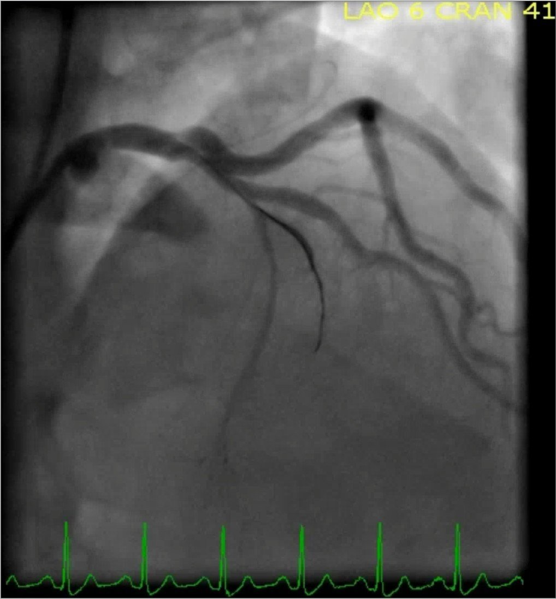
Hẹp trong stent ở LAD đoạn giữa đến đoạn xa, tắc 100% và dòng chảy TIMI 0

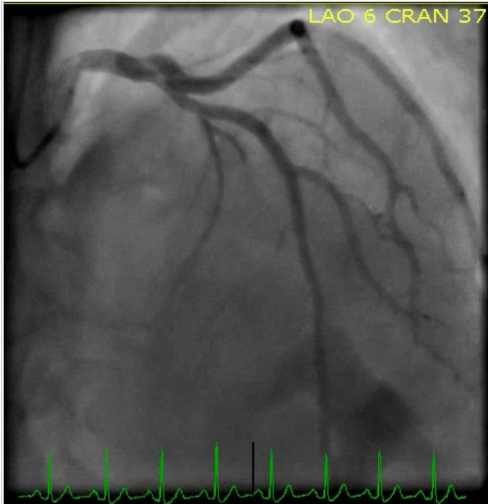
LAD sau khi đặt stent phủ thuốc (DES), dòng chảy TIMI 3
Vùng cơ tim do mạch máu này cấp máu lớn đến mức nào trở nên rõ ràng ở đây (và còn kéo dài thêm vài khung hình nữa sau ảnh tĩnh này). Không phần nào trong vùng này được tưới máu cho đến thời điểm này.
Troponin T cuối cùng vào sáng hôm sau là 1.33 ng/mL, và có thể vẫn còn đang tăng, tuy nhiên chúng tôi không có thêm số đo nào.
Sau thông tim

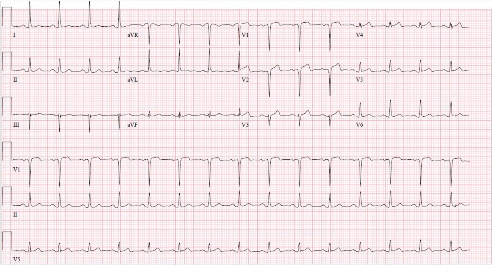
Sóng T tái tưới máu ở các chuyển đạo V1-V4
– V1 và V2 giờ có sóng Q và ST chênh lên dai dẳng, phù hợp với “hình thái phình thất trái”, cho thấy nhồi máu toàn bộ bề dày thành tim
– V3 còn giữ được một sóng R rất nhỏ (gần như “hình thái phình thất trái”); tuy nhiên, bạn có thể thấy đã mất bao nhiêu cơ tim khi so sánh QRS này với các QRS trước đó trong ca bệnh
– Tương tự, điện thế sóng R ở V4 đã giảm mạnh (đây là một trong những yếu tố dự báo hiệu quả nhất của tắc LAD kín đáo trong nghiên cứu công thức “tái cực sớm và tắc LAD kín đáo”).
Bệnh nhân xuất viện một ngày sau can thiệp và có vẻ đang ổn. Không có thêm siêu âm tim nào sau thông tim. Nhồi máu toàn bộ bề dày thành tim với hình thái phình thất trái khiến ông có nguy cơ cao hơn bị các biến chứng ngắn hạn và dài hạn (ví dụ: vỡ thành tự do, thủng vách liên thất (VSD), hội chứng Dressler, suy tim sung huyết (CHF) mạn tính, phình thất trái thực thể, huyết khối thất trái, đột quỵ, v.v.).
Những điểm giảng dạy:
1. Như đã được nhắc đến nhiều lần trên trang này và được minh chứng lại ở đây: đọc điện tâm đồ chủ quan bởi chuyên gia vượt trội hơn tiêu chuẩn STEMI. Dù thông tim cho thấy có tắc mạch vành cấp, các điện tâm đồ của ông chưa bao giờ đạt tiêu chuẩn STEMI. Thứ nhất, chúng tôi đã chỉ ra trên blog này rằng điện tâm đồ không nhạy hoàn hảo với OMI, kể cả khi nằm trong tay người giỏi nhất. Ngoài ra, bệnh nhân này có nhiều đợt đau ngực tái phát mà không được ghi lại điện tâm đồ – rất có thể một vài trong số những điện tâm đồ ghi lại đó đã cho thấy các dấu hiệu rõ ràng hơn, và đây chính là tầm quan trọng của các điện tâm đồ liên tiếp (các điện tâm đồ liên tiếp biến bác sĩ kém thành bác sĩ khá và bác sĩ giỏi thành bác sĩ xuất sắc). Khi bệnh nhân đau ngực lúc có lúc không như thế này, thời gian của các đợt tắc có thể ngắn đến mức điện tâm đồ không tiến triển tới giai đoạn ST chênh lên, mà chỉ có sóng T tối cấp trước khi tái tưới máu. Tình trạng tắc thoáng qua này có thể xảy ra lặp đi lặp lại mà thậm chí không làm tăng troponin nếu các đợt đủ ngắn, và kiểu biến cố ngắt quãng (stuttering) này chính là ý nghĩa trước kia của thuật ngữ “đau thắt ngực không ổn định”. Hiếm hơn, đôi khi cũng có trường hợp bệnh nhân tắc hoàn toàn LAD có thể không bao giờ xuất hiện ST chênh lên có giá trị chẩn đoán, ngay cả khi được ghi điện tâm đồ thường xuyên trong suốt quá trình tiến triển đến nhồi máu hoàn toàn.
2. Thận trọng khi kê opioid cho bệnh nhân nghi ACS. Dùng opioid để điều trị khó chịu ở ngực ở bệnh nhân ACS có thể che lấp triệu chứng của thiếu máu cục bộ đang tiếp diễn. Điều này có thể dẫn đến sự yên tâm sai lầm cho người điều trị, khiến họ ít có xu hướng theo dõi troponin, điện tâm đồ liên tiếp, hay kích hoạt phòng thông tim. Hướng dẫn AHA/ACC năm 2014 về xử trí bệnh nhân hội chứng vành cấp không ST chênh lên khuyến cáo kích hoạt phòng thông tim khẩn hoặc ngay lập tức và can thiệp xâm lấn cho bệnh nhân có triệu chứng kháng trị dù đã điều trị nội khoa tối đa, được định nghĩa là aspirin cộng clopidogrel hoặc ticagrelor cộng heparin hoặc enoxaparin. Không rõ việc dùng opioid có ảnh hưởng gì, nếu có, đến kết cục của ca này.
3. Viêm màng ngoài tim nên được xem là một chẩn đoán loại trừ, trừ khi bệnh sử, khám thực thể và điện tâm đồ điển hình đến mức khó có thể là bất cứ điều gì khác. Nó không thể chấp nhận được như một chẩn đoán ban đầu ở bệnh nhân có yếu tố nguy cơ bệnh tim. Như trong ca này, chẩn đoán viêm màng ngoài tim nhiều khả năng đã dẫn đến vô số ca ACO bị bỏ sót. Theo xem xét hồ sơ, ông không gặp kết cục xấu rõ ràng nào trong ngắn hạn, nhưng ông có nguy cơ cao bị các biến chứng mà lẽ ra có thể phòng ngừa được nhờ đọc điện tâm đồ tốt hơn.

———————————————————–
Bình luận của KEN GRAUER, MD (4/7/2018):
———————————————————–
Nhận diện biến dạng phần cuối QRS — là một khái niệm mà tôi chưa bao giờ được học trong những năm hành nghề. Đến giờ đôi khi tôi vẫn quên tìm nó. Ca này có lẽ là ví dụ hay nhất mà tôi từng thấy về việc vận dụng khái niệm này quyết định chẩn đoán như thế nào.
- Trong Hình 1 — tôi đã trích từ bài blog ở trên những “Lời khuyên quý giá” (Pearls of Wisdom) của Drs. Smith & Meyers mà tôi mong sẽ khắc sâu vào trí não mình. Bức hình này thật sự đáng giá 1.000 lời!

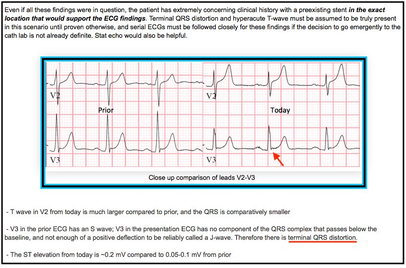